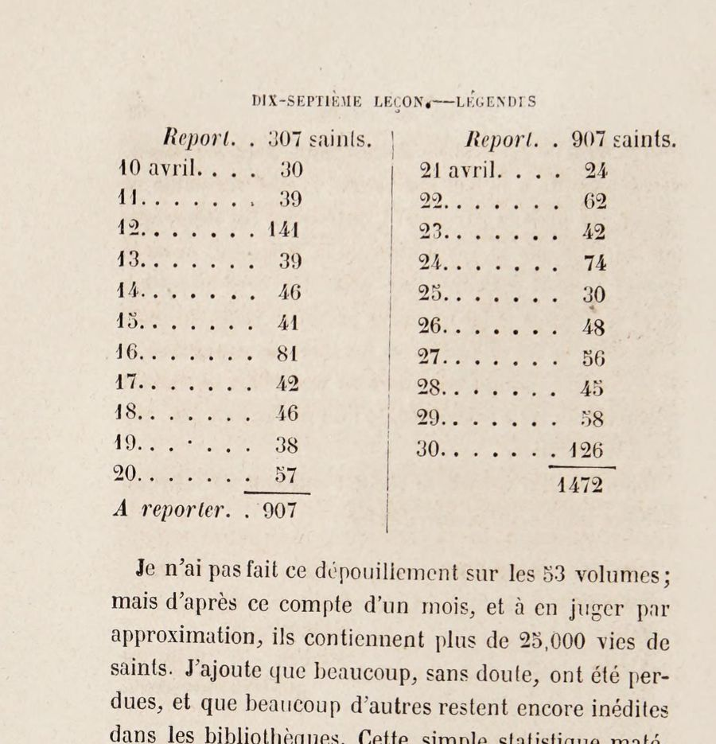

The Bollandists and the saints of April (Leçon XVII, pp. 31–32)
French: tome II, pp. 31–32, scans n44–n45. Guizot’s day-by-day table is summarised, not transcribed. Highlighted: what Lecky uses.

So the materials accumulated for the collection begun in 1643 by Bolland, a Belgian Jesuit, continued since by many other scholars, and known as the Collection of the Bollandists. All the documents on the lives of the saints are gathered in it and arranged by month and by day. The undertaking was interrupted in 1794 by the revolution in Belgium, so the work is finished only for the first nine months of the year and the first fourteen days of October. The end of October and the months of November and December are missing; but the materials for them had been prepared; they have been found, and it is said they will soon be published.
In its present state the collection has 53 folio volumes … Would you like an idea of the number of lives of saints, long or short, contemporary or not, that fill these 53 volumes? Here is the table, day by day, of those of the month of April: [1 April, 40 saints … 30 April, 126; total, 1,472.]
I have not made this count for all 53 volumes; but from this count of one month, and judging by approximation, they contain more than 25,000 lives of saints. I add that many, no doubt, have been lost, and that many others remain unpublished in libraries.
Original French
Ainsi se sont amassés les matériaux de la collection commencée en 1643 par Bolland, jésuite belge, continuée depuis par beaucoup d’autres savants, et connue sous le nom de Recueil des Bollandistes. Tous les monuments relatifs à la vie des saints y sont recueillis et classés par mois et par jour. L’entreprise fut interrompue en 1794 par la révolution de la Belgique; aussi le travail n’est-il terminé que pour les neuf premiers mois de l’année et les quatorze premiers jours du mois d’octobre. La fin d’octobre et les mois de novembre et de décembre manquent; mais les matériaux en étaient préparés; on les a retrouvés, et l’on ne tardera pas, dit-on, à les publier.
Dans son état actuel, ce recueil contient 53 volumes in-folio … Voulez-vous avoir une idée du nombre de vies de saints, longues ou succinctes, contemporaines ou non, qui remplissent ces 53 volumes? Voici le tableau, jour par jour, de celles du mois d’avril: [1er avril, 40 saints … 30 avril, 126; total, 1472.]
Je n’ai pas fait ce dépouillement sur les 53 volumes; mais d’après ce compte d’un mois, et à en juger par approximation, ils contiennent plus de 25,000 vies de saints. J’ajoute que beaucoup, sans doute, ont été perdues, et que beaucoup d’autres restent encore inédites dans les bibliothèques.
Lecky’s note 5 adds that the collection “was stopped for a time by the French Revolution, but renewed under the patronage of the Belgian Chambers”. Guizot, lecturing about 1829, has the interruption of 1794 (“the revolution in Belgium”) and only the rumour that the work would go on; the renewal is Lecky’s own information.
Further down the rabbit hole
Sources that Lecky cites in the notes next to the ones that cite this page.
- Hume, Of MiraclesThe doorkeeper of Saragossa who grew a new leg
- Sprat, History of the Royal Society of LondonLecky adds ‘a’ to Sprat on miracles
- Maury, Essai sur les légendes pieuses du moyen âgeThe stag that sucks serpents out of their holes, and the angel who carried the star of Bethlehem
- Middleton, A Free Inquiry into the Miraculous PowersMiddleton’s exorcists and what Lecky altered in quoting him
- Brewster, Memoirs of the Life, Writings, and Discoveries of Sir Isaac NewtonLecky’s Newton quote and the missing last sentence
- Socrates, Ecclesiastical HistoryThe monk who would not undress to cross a river, and the eighty priests burnt at sea


Backlinks
Every place in Rationalism in Europe that links to this page (generated automatically when the site is built).
- Chapter II: note 5